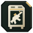
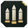
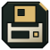

X01 Black Site
X01 Black Site – požeminė Exclusion Zone, Call of Duty: Modern Warfare 4 DMZ atsiradusi Season 1. Joje du aukštai, savi išėjimai ir bosai, o 3D Printer gamina daiktus, kurių bazės spausdintuvas negamina.
Kaip patekti
Įėjimas – krovininis liftas šiaurės vakarų Hajin kampe. Programoje X01 žyma Hajin žemėlapyje atveria X01 aukštų planus. Tikslios durys ir liftas žaidime dar nepatikrinti.
Kas yra kiekviename aukšte
1 aukštas 13
- Raktų kambarys1

Weapon Locker1- Bounty Terminal1
- Išėjimai1
- Avariniai išėjimai1
 Pradžios vietos4
Pradžios vietos4
Šaudmenys / šarvai4
2 aukštas 22
- Išėjimai3
- Avariniai išėjimai1
- Pradžios vietos4
- Šaudmenys / šarvai6
- Radiniai2
- Laiptai5

Keycard Encoder1
Aukštų pavadinimai kaip programoje. Žaidime dar nepatikrinti.
Raktų kambarys ir Keycard Encoder
- Keycard EncoderEncodes a blank keycard into a staff or admin keycard.2 aukštas
- Superintendent's OfficeNeeds the Superintendent's Office card.1 aukštas
- Weapon Locker1 aukštas
- Bounty Terminal1 aukštas
X01 bosai 5
 The CaptainVadas
The CaptainVadas- WheelsonVadas
 Tae-HyunLeitenantas · Knuckle
Tae-HyunLeitenantas · Knuckle- Chol-MinLeitenantas · The Wrench
- BlixLeitenantas
X01 3D Printer 7
Šiuos daiktus gamina tik X01 3D Printer. X01 laiptais užlipk į kabinetą Production Assembly antresolėje, E5 langelyje, ir spausk Print Item.
 3.5-Plate Armor Vest1× Specter Fabric Sample · 2× Power Regulator · 5× Structural Alloy
3.5-Plate Armor Vest1× Specter Fabric Sample · 2× Power Regulator · 5× Structural Alloy- Survivor Box1× SR-16 Bio Agent Sample · 2× Ballistic Fabric · 3× High-Tenacity Fibers
- Argonaut Armor1× Specter Fabric Sample · 2× Alloyed Plating · 5× High-Tenacity Fibers
 Encodable Blank Keycard6× Printed Circuit Board · 8× Control Unit
Encodable Blank Keycard6× Printed Circuit Board · 8× Control Unit Staff Emergency Exfil Keycard2× CPU · 4× Printed Circuit Board · 8× Control Unit
Staff Emergency Exfil Keycard2× CPU · 4× Printed Circuit Board · 8× Control Unit Experimental Compounds2× Volatile Explosives · 5× Binding Catalyst
Experimental Compounds2× Volatile Explosives · 5× Binding Catalyst Nano-Structured Alloy2× Turned Components · 5× Structural Alloy
Nano-Structured Alloy2× Turned Components · 5× Structural Alloy
Žiūrėk žemėlapyje DMZ Tactical programoje